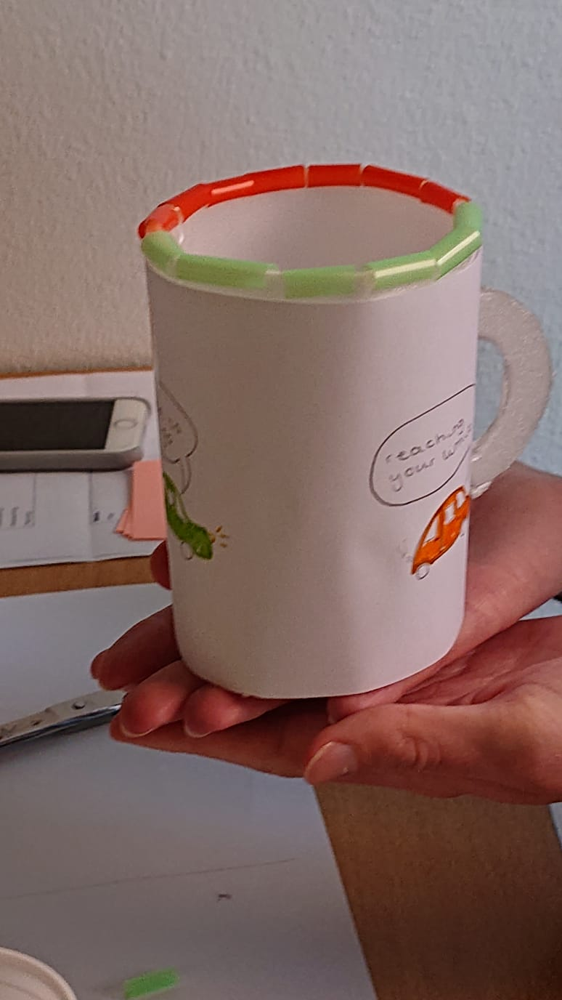
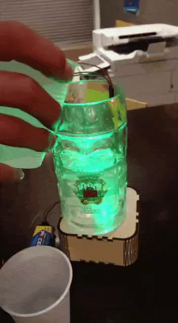

Introduction
Drinking buddy is a smart mug, with two major functions. It will make sure the barman will put enough drink in your mug and also prevent roofying.
This concept was done in a rapid prototyping week, to design and prototype at the same time. My main role was using Arduino.

Paper Prototype
The first prototype was a paper prototype that we presented to explain our concept, and what we’d be working on for the week.

Arduino
To realize the concept I used a water level sensor. The idea was that when enough water was added it would turn green, otherwise it would stay red.

Testing
For the high-fi prototype we used a beer mug, laser cutted a wooden casing and an arduino. In this wooden casing we could hide the arduino. Now the prototype was ready to be tested.

The Prototype
We tested the prototype with Ibuprofen as the drug. While testing this I noticed the sensor values didn’t make sense anymore. I discovered Ibuprofen influences acidity of the water, meaning the conductivity will also be affected.
I made this flaw work in my favor. I now knew if I’d add Ibuprofen to clean water, the water level sensor would read suddenly read all values higher. Thus, if the sensor value would get higher than X the prototype would start flickering.

Winning Concept
Eventually after presenting the concept, our team won the prize for the most awesome product!